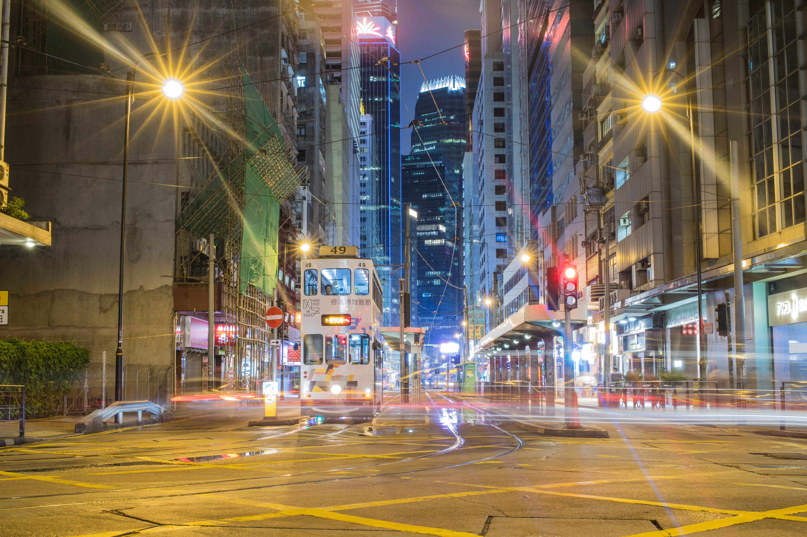
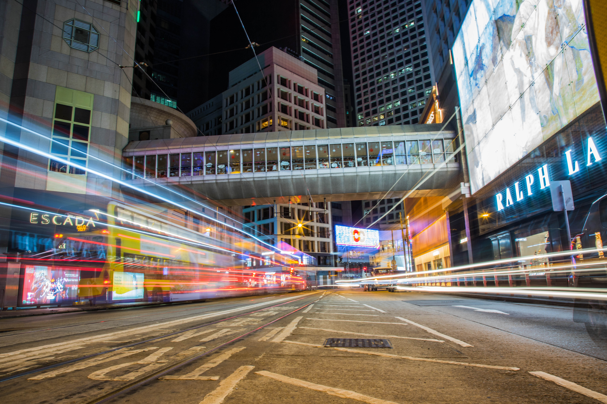
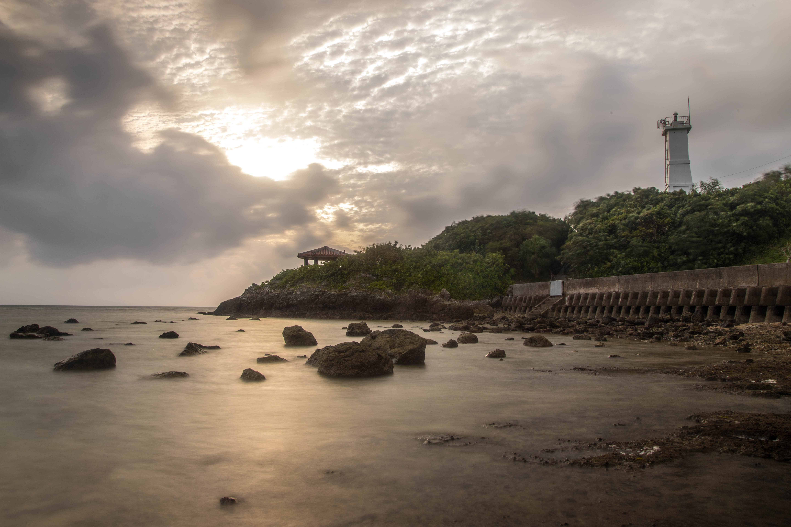
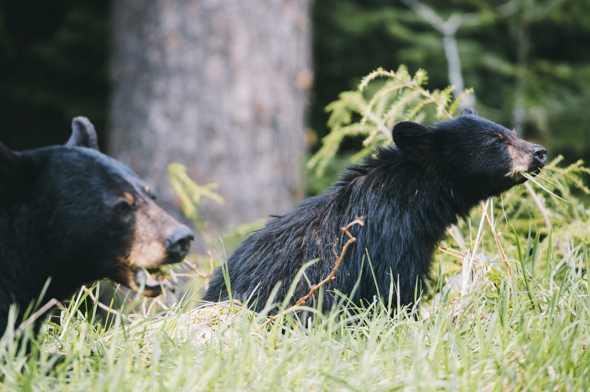
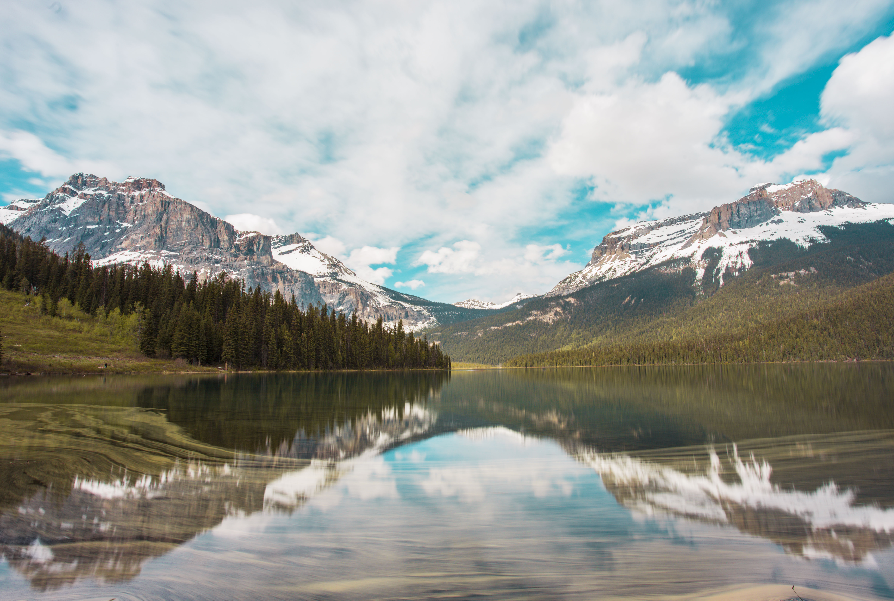
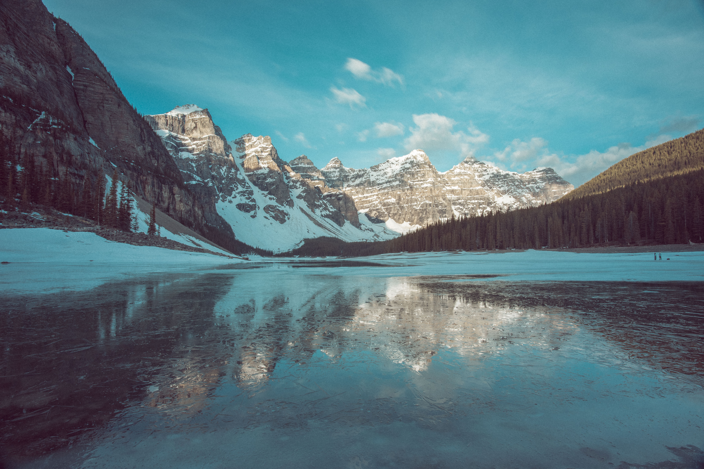
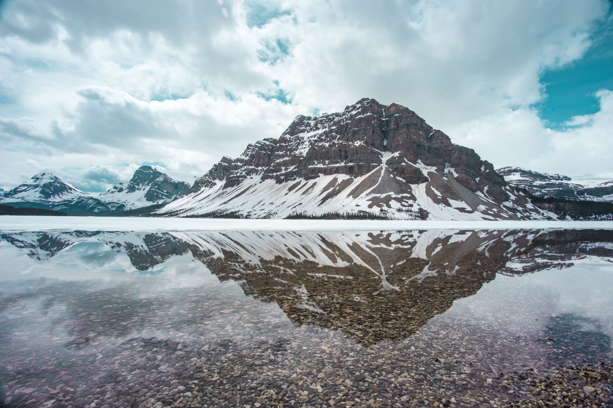

Wan Chai At the Sixth Station
December 20, 2018
Shot with Canon 6D mark II with Canon 24-104mm F4. Camera setting: aperature at F4, shutter speed 15 second, iso 500

Night photography Central Finacial District
December 20, 2018
Shot with Canon 6D mark II with Canon 24-104mm F4. Camera setting: aperature at F4, shutter speed 15 second, iso 500

Girl on bike Ishigaki local Island
July 14th 2019
Shot with Canon 6D mark II with Canon 24-104mm F4. Camera setting: aperature at F7, shutter speed 1/300, iso 100

Sunset on Ishigaki
July 14th 2019
Shot with Canon 6D mark II with Canon 24-104mm F4. Camera setting: aperature at F22, shutter speed 5sec, iso 50

Sunset on Sunflower in Pullman, Washington
June 4th 2021
Shot with Canon 6D mark II with Canon 70-200mm F2.8. Camera setting: aperature at F11, shutter speed 1/20, iso 200

Ross Lake in North Cascades National Park
Oct 16th, 2021
Shot with Canon 6D mark II with Canon 17-40mm F4. Camera setting: aperature at F11, shutter speed 10sec, iso 50, ND filter 6stop

Mama Bear with cub Whistler National Park
June 4th, 2022
Shot with Canon 6D mark II with Canon 100-400mm F4-6.5. Camera setting: aperature at F6, shutter speed 1/400, iso 400

Reflection on Emerald Lake Yoho National Park
June 6th, 2022
Shot with Canon 6D mark II with Canon 17-40mm F4. Camera setting: aperature at F11, shutter speed 10sec, iso 50, ND filter 6stop

Sunrise at Moraine Lake at Banff,British Columbia
June 8th 2022
Shot with Canon 6D mark II with Canon 17-40mm F4. Camera setting: aperature at F11, shutter speed 15sec, iso 50, ND filter 6stop

Bow Lake Banff National Park Alberta
June 9th 2022
Shot with Canon 6D mark II with Canon 17-40mm F4. Camera setting: aperature at F11, shutter speed 10sec, iso 50, ND filter 6stop